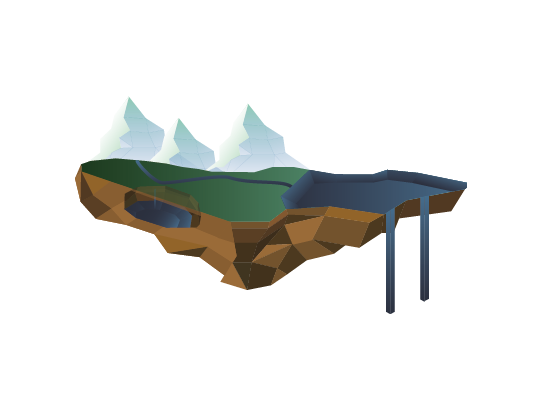

La gestion de l'eau : un enjeu environnemental majeur
Depuis quelques années maintenant, l’eau est perçue comme une ressource précieuse et de plus en plus convoitée.
Le manque d’eau affecte à la fois les populations humaines et les écosystèmes. Or, la population mondiale augmente et consomme de plus en plus d’eau.
L'évolution de notre mode de vie et de notre mode de consommation impacte considérablement l’accès et l’usage de cette ressource. Il existe cependant des solutions à l’échelle à la fois locale et globale, sur le court et le long terme.
Des flux divers et un cycle complexe, l’eau se transforme encore et encore
La ressource de l'eau provient principalement des forages d’eau souterraine, des cours d’eau (rivières, fleuves), de la pluie, des nappes phréatiques et des plans d’eau, voici son cycle :
L'évaporation
La transpiration
La précipitation
Le ruisselement
L'infiltration
L'écoulement
3 800 000 000 000 000 litres d'eau
km3 sont consommés
chaque années dans le monde
Volume d’eau nécessaire pour la production des biens et des services consommés.
Un volume très variable selon les habitants
La consommation d’eau varie énormément en fonction des pays. Cette situation est principalement due à la richesse des pays, ce qui a directement un impact sur leur accès à de l’eau, et surtout de l’eau potable.
Industrie
Boisson
Energie
Agriculture
Une consommation inégale selon les secteurs en France

Volume d’eau nécessaire pour la production des biens et des services consommés.
Consommation d'eau douce en fonction des secteurs d'activité - Moyenne 2008-2018
Source : francetvinfo.fr
Auteur: Kieffer Dahomey
32.3 milliards
de m3 d'eau prélevés en 2018
Le prélèvement d'eau douce pour la production d'énergie constitue une majeure partie des prélèvements totaux effectués en France
Les autres secteurs sont considérablement moins hydrovore concernant ce prélèvement
(Un prélèvement d'eau consiste à pomper de l'eau du milieu naturel)
Voir les proportions
Voir les volumes
L'eau, une nécessité pour la production énergétique
Volume et consommation d'eau douce prélevée en fonction des secteurs d'activité en 2018
Source: francetvinfo.fr
Auteur: Kieffer Dahomey